Seasons
4
S1, S2, S3 and S3.1 under CTBE
Peak pack size
~400
mods in Astral Divergence
Rebrand
Jul 6
2026: CTBE becomes CPB
New platform
1.21.1
NeoForge, picked by members
Seasons at a glance
May 2025 to October 2026. Striped bars have approximate dates.
1. Origins: a small group of friends
CTBE started as a small group chat: CreateModFan12, Cayd (caydsgamertag), supercat Creative/EWGB, axolotls525 and KALASH4741. These five were later thanked by name in the July 2026 rebrand announcement for being there from the beginning.
The server grew because Cayd said the group was lonely and asked to let more people in. CreateModFan12 agreed. Without that decision CTBE might have stayed a small group chat. The SMP was never set up as a commercial network; it grew because its first members wanted more people to play with.
CreateModFan12 became the project lead, running the modpack, server, technical work, announcements and polls. Cayd became co-founder and co-owner.
Before the SMP
The May 18, 2025 Create workshop predates Season 1 and the CTBE SMP. It records an earlier stage of the group’s Minecraft history.
Season 1
Season 1 came before the documented Season 2 period, and its world save still exists. A video from May 28, 2025 was shared back to members in August 2025 with the question "Who remembers this from S1?" Its exact launch date, mod list and length aren't recorded, so this page doesn't guess at them. The screenshots below are from that early period.
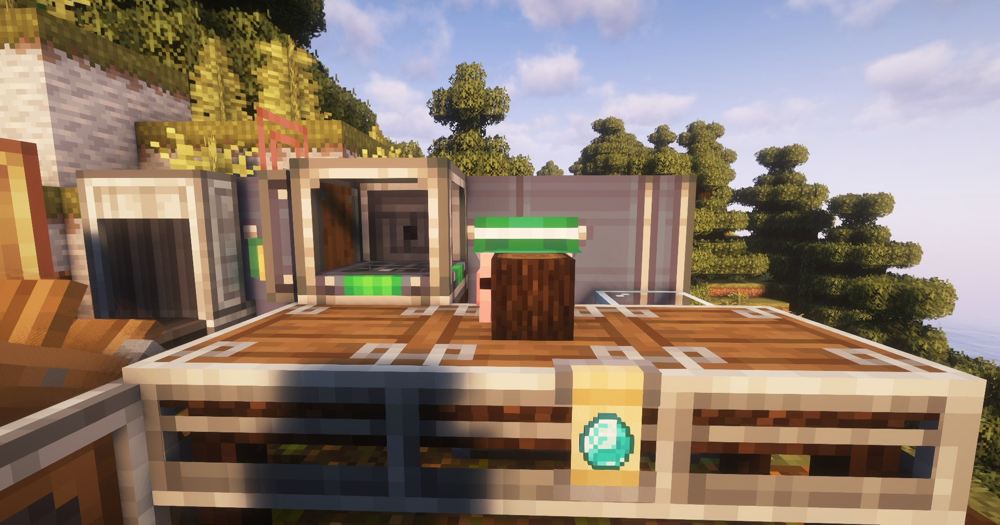
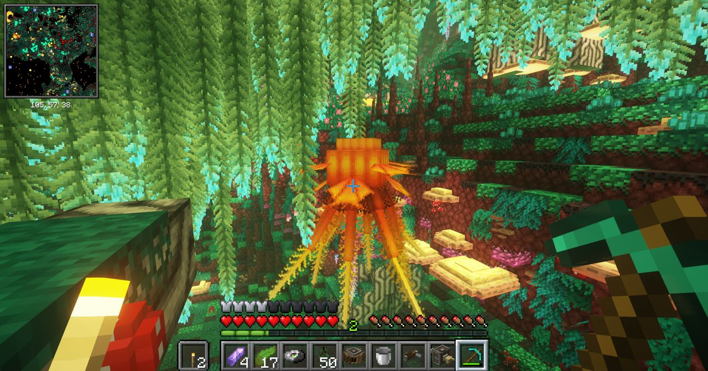
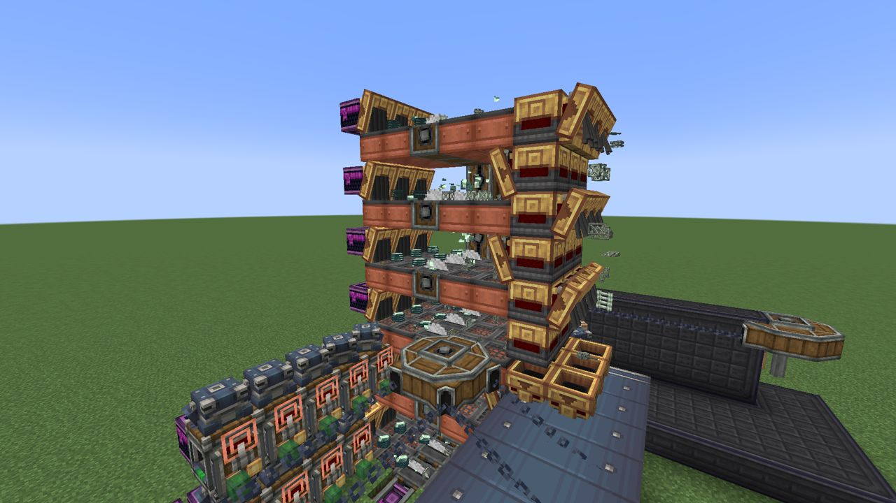
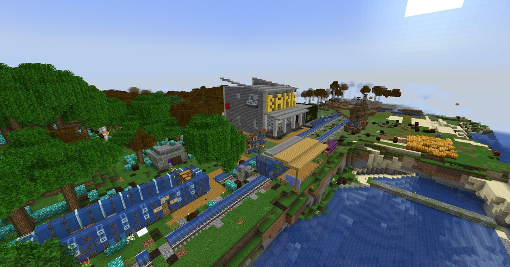
Season 1 clip
2. Season 2
Season 2 is the first season with firm start and end dates. It ran for just over five months, a substantial chapter rather than a short experiment, and belongs to the early CTBE era before Astral Divergence.
Over the season the world filled up with industrial yards, an airbase, a brick rail station, a vehicle depot and Camp 42. On October 30 a house fire broke out (chat: "damn home insurance will not pay for this one"). Season 2 ended on December 7, 2025; the records don't say exactly why it concluded.
Season 2 world-save cleanup
8.33 GB
Before trimming
1.04 GB
After trimming
About 87.5% less storage used. The figures show the size reduction, not which regions were removed.
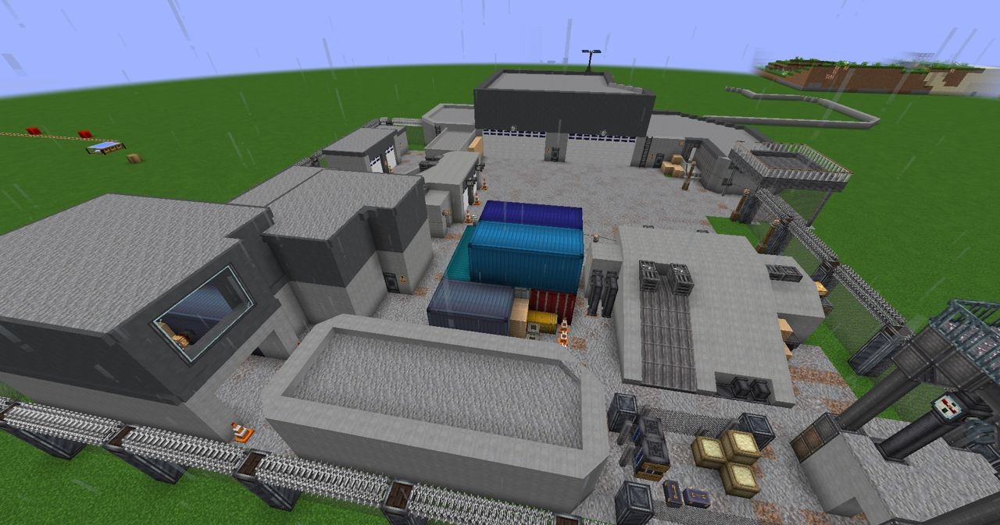
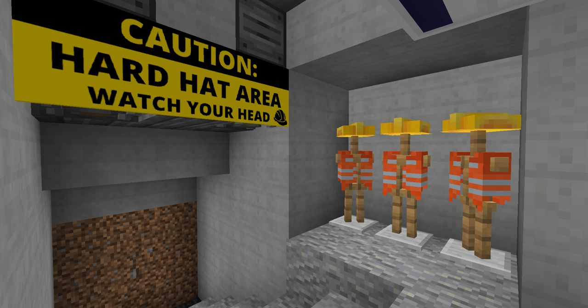
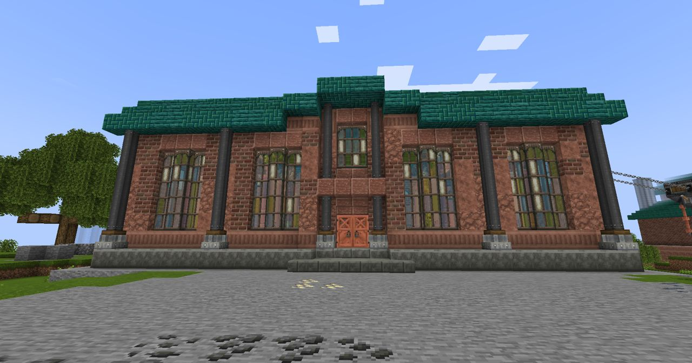
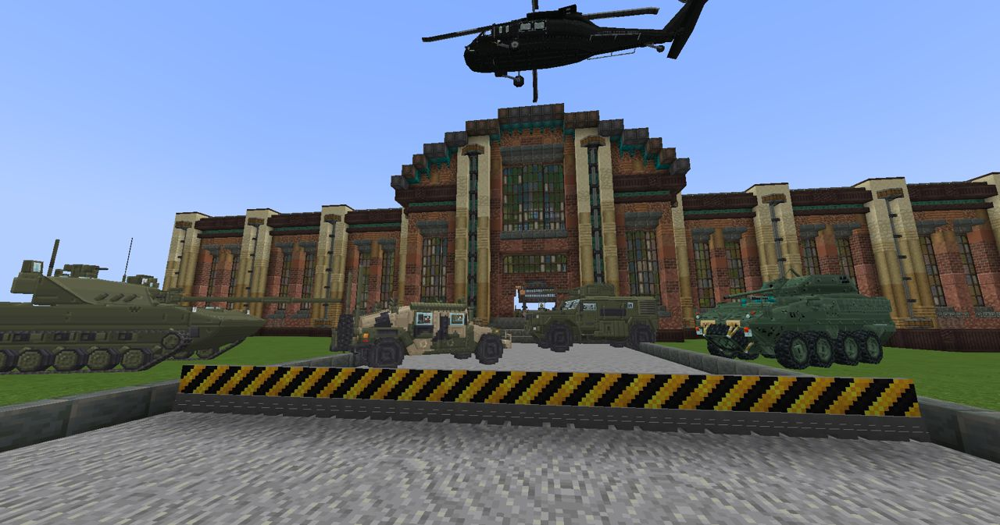
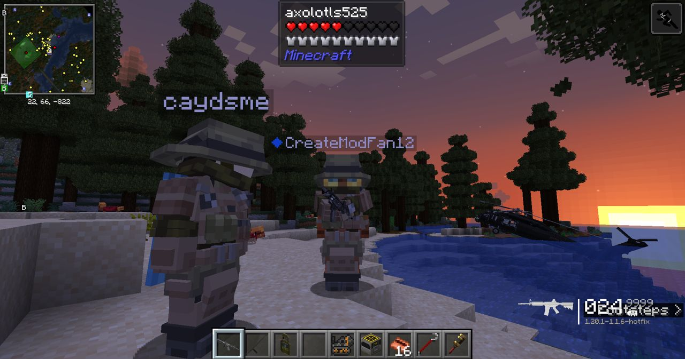
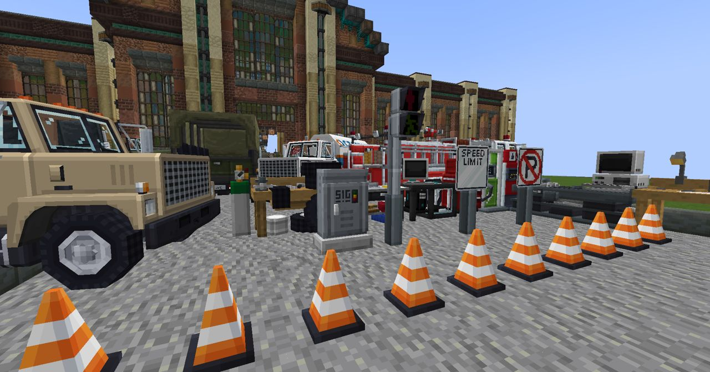
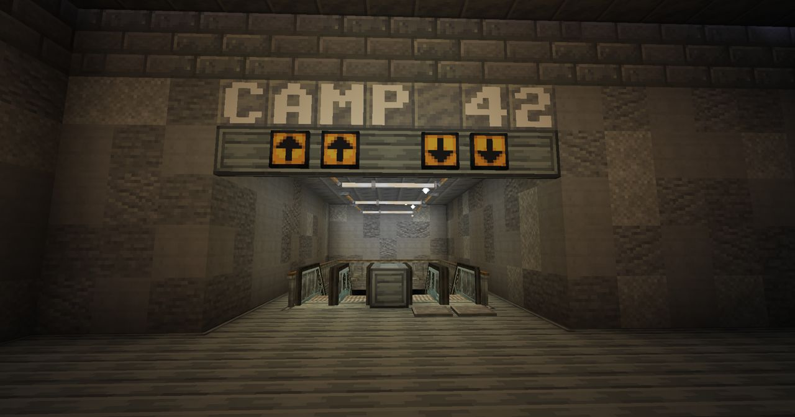
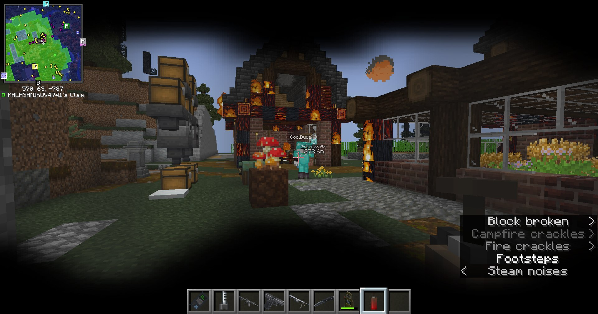
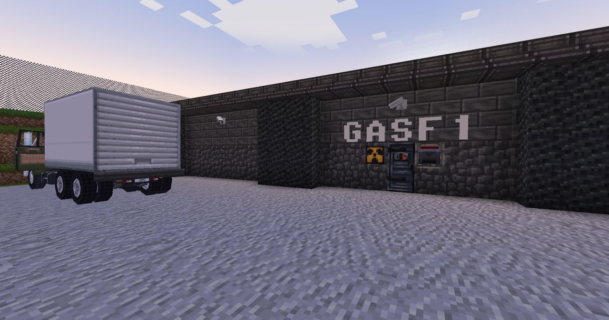
3. The community shaped the pack
A pattern that defined both CTBE and CPB: members were asked to vote on modpack changes, events and server decisions. Some polls were about gameplay, some about presentation, some about community events.
There was a weakness too. Having a community and getting it to take part were two different things. When the Halloween event poll closed, 27 members hadn't voted. By November the server was being called "dead", with only two votes in a whole day on the server-mod poll. Poll turnout isn't the same as in-game activity, but it shows how hard it was to get a response.
Votes cast per poll
Recorded Discord polls. Hover or tap a bar for details.
Most polls got 1–4 votes
Select a bar to see the poll.
4. Season 3: Astral Divergence
Season 3 was a far more ambitious modded experience, combining Create engineering with space exploration. Create supplied the machinery and automation; Ad Astra added a path to space. The name, Astral Divergence, captured that direction.
A pack of roughly 400 mods has a lot of moving parts. Updates, dependencies and interactions make maintenance hard even when the game launches fine. No single compatibility issue is recorded as ending the season, but keeping a pack this size running was a big part of the organizer's workload.
Minecraft
1.20.1
Loader
Forge
Create
6.0.8
Space
Ad Astra
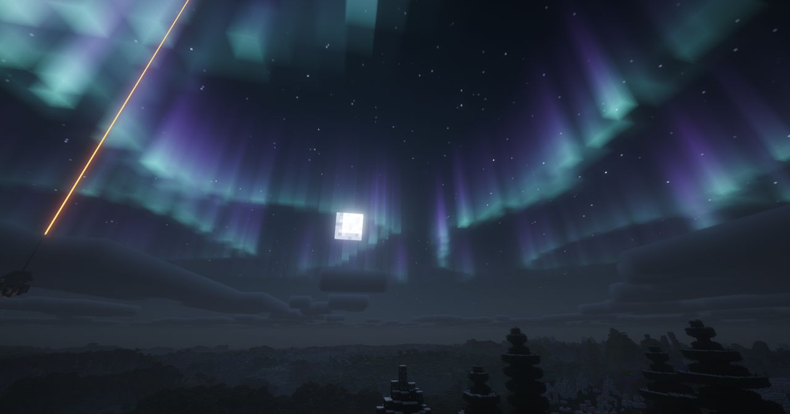
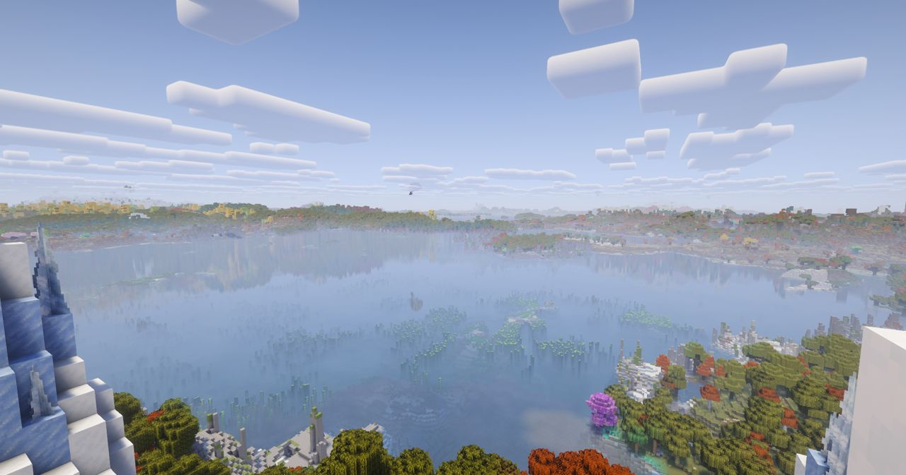
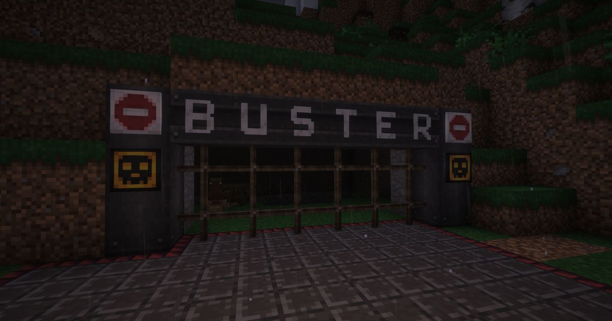
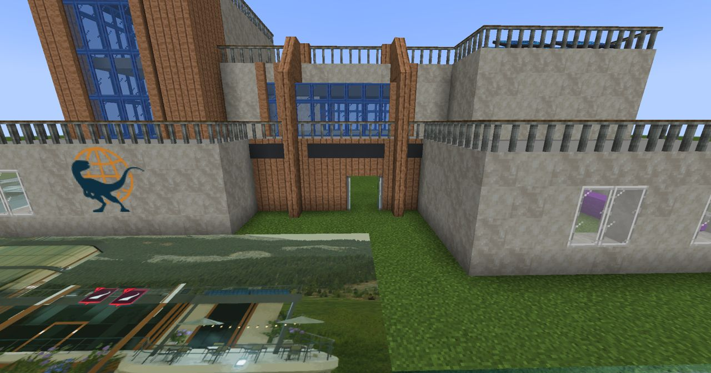
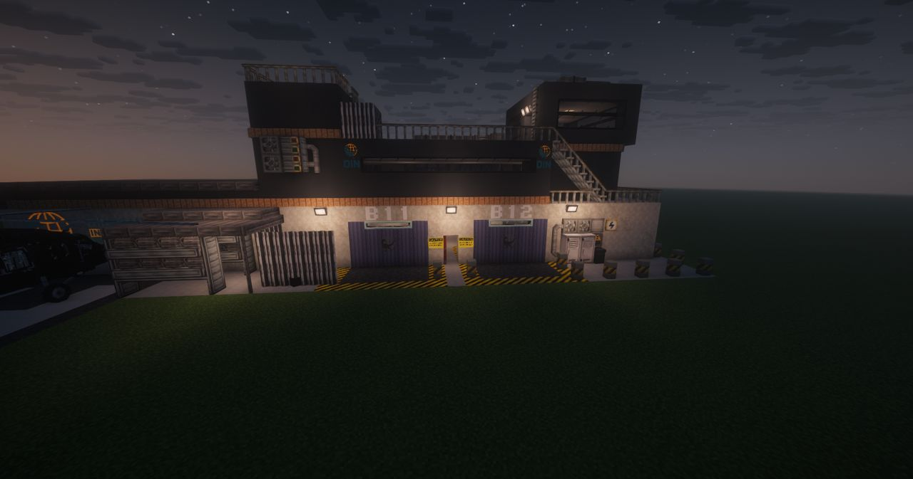
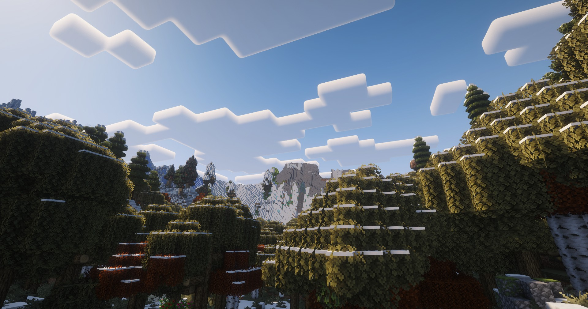
5. The project keeps evolving
- January 9: members were asked to choose between keeping Cool Decor and the big girders, or being able to view recipes. The next morning a port was found that might offer "the best of both worlds".
- January 14: a gameplay-design poll on whether oil should be finite or renewable.
- April 18: a review of the rules and entry requirements. The CFL permit requirement was creating barriers, so the plan was to lower it, rework rules and partly rebrand parts of the server, with accessibility, clarity and fairness as goals. This was the start of the later constitution rewrite. The same day, Create Aeronautics' release was announced.
- May 29 – ~June 7: development paused while the founder was away from home.
- June 10: a poll on whether to keep Ars Nouveau.
6. Season 3.1: The Blueprint Expedition, Operation Genesis
Season 3.1, Create: The Blueprint Expedition — Operation Genesis, followed Astral Divergence. It matters because it links the old CTBE identity to the name that replaced it: the "Blueprint" idea was already here before the rebrand.
On launch day the founder also had to take their puppy to the vet for a dislocated arm, so the server was down for about an hour. The SMP was run by one person juggling real life, not by an operations team.
The launch worked and people joined, but turnout was poor compared with what was hoped for. A first player joining is a milestone; it isn't the same as a busy, sustainable SMP.
Season 3.1 announcement video
The announcement and lore of Operation Genesis.
Launch countdown
June 16
Countdown page goes live at whens3.1.html
June 17
Rules reminder, call for testers
June 18
React if you plan to join
June 20 · 12:04 PM
Four hours to go
3:02 PM
30 minutes to early prep, one hour to launch
3:29 PM
Modpack and address shared: playctbe.mslacademy.online
3:55 PM
First player joins
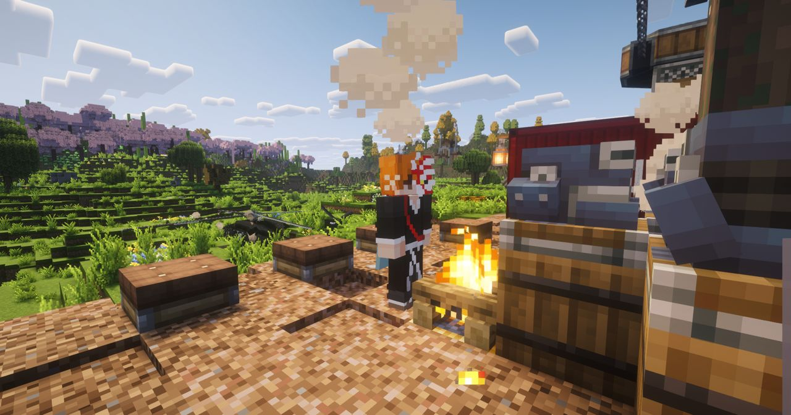
After launch
- June 26: poll on adding Better Nether/End, using a newly found Forge port.
- June 27: short downtime to set up a server management portal.
- June 28: Fairy Lights flagged as a needed mod.
- July 7: interest polls for Tinkers' Construct, Jack's Economy, ComputerCraft, Immersive Engineering, Immersive Weathering and Yuushya Townscape.
"Polls are used to measure community interest. A positive vote does not guarantee a mod will be added." July 7, 2026. Compatibility, stability, performance and CPB's direction decide.
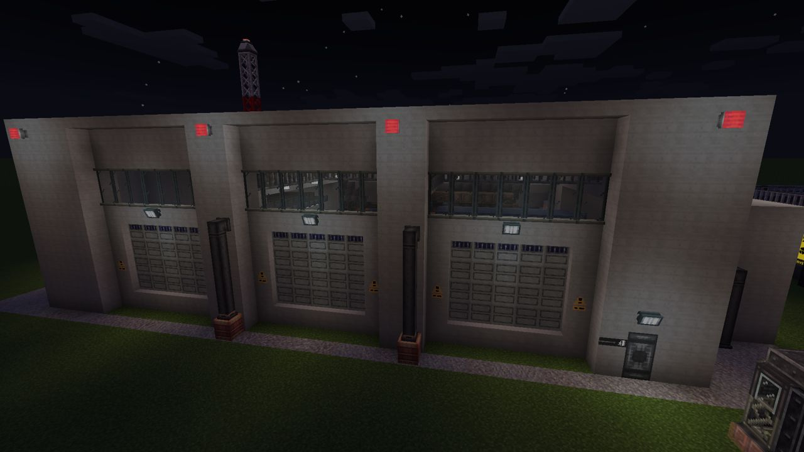
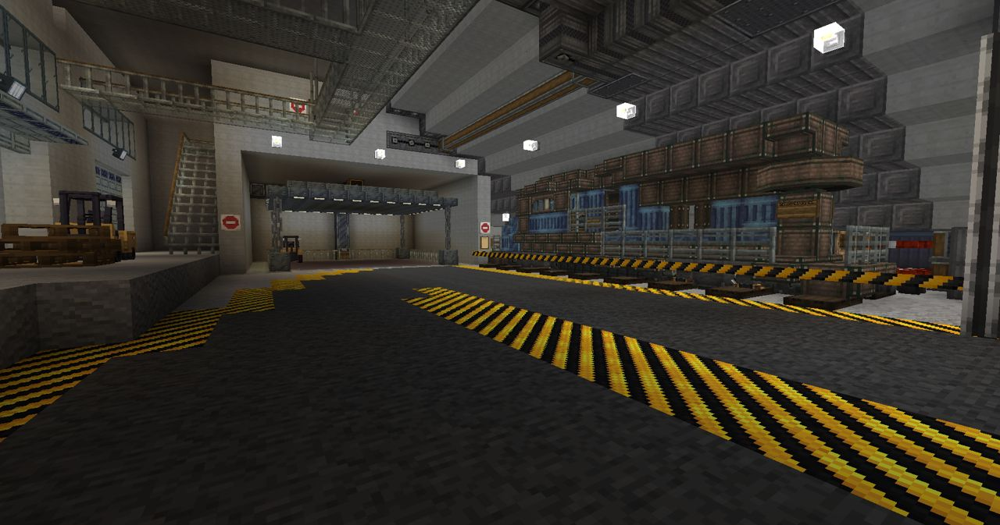
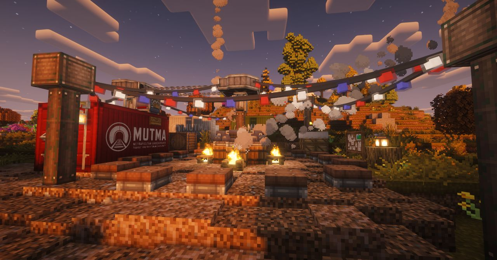
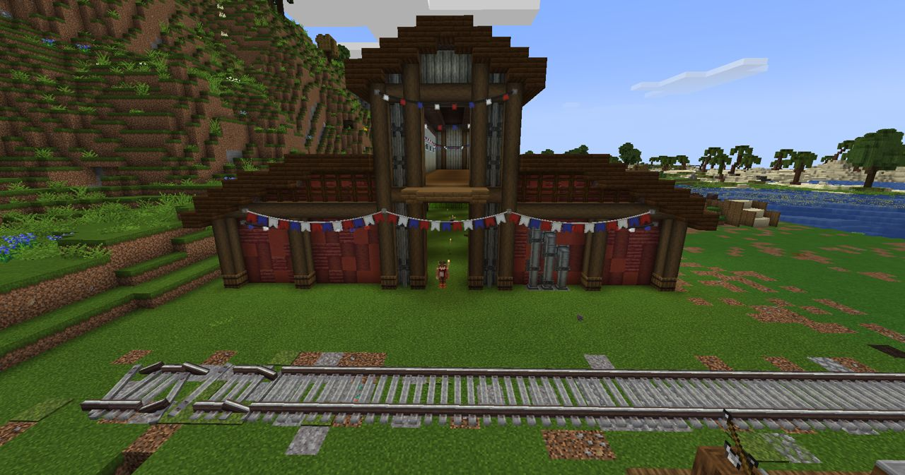
7. July 6, 2026: CTBE becomes Create: Project Blueprint
CTBE
2025 – 2026
CPB
Create: Project Blueprint
Announced July 6, 2026 · 8:31 PM
The CTBE name and branding were retired and replaced with Create: Project Blueprint. The announcement was clear that the SMP itself wasn't going anywhere; only its identity and direction were changing.
Why: during a modpack update, the original pack stopped working. It would print two lines in the log and exit. Rather than patching the old project forever, a clean transition was chosen:
- Retire the CTBE branding and continue as Create: Project Blueprint.
- Build a new modpack compatible with the CTBE pack.
- Rewrite the constitution from the ground up, with a clearer summary of member freedoms and restrictions.
- Keep the current season running until CPB Season 1 was ready, then retire it to free server resources.
The original members (Cayd, supercat Creative/EWGB, axolotls525 and KALASH4741) were thanked by name, along with Cayd's push to open the group up. Everyone who was a member before the rebrand received a special legacy role, plus an in-game cape (needs the official modpack and CapeJS, redeemed by request for a limited time). There was even a channel to mourn the old branding.
8. The hardware failures
July 14
Power supply fails
The machine hosting Season 3.1 won't power on. The SMP stays offline until CPB Season 1. The PSU is proprietary, so a standard ATX unit can't replace it.
August 9
Motherboard broken
A second hardware failure on top of the PSU. The machine itself has to work again, not just the modpack.
August 14
New motherboard
A replacement board arrives, and rebuilding continues toward CPB Season 1.
The outage announcement was explicit: no donations, money, gifts or replacement hardware were being asked for. The project had always been funded out of the founder's own pocket, and they wanted to keep it that way. Members were only asked to be patient.
9. Building Create: Project Blueprint
The original release target for CPB Season 1 was September 1–4, 2026. By September 9 it had been pushed back to around early October, and that target also slipped. Several obstacles overlapped:
- The original CTBE modpack broke during an update.
- The server hardware lost its power supply, then its motherboard.
- The move to Minecraft 1.21.1 NeoForge meant redoing compatibility and configuration.
- Uneven engagement made it hard to judge how many people would join at launch.
- The constitution and its ratification were still in progress.
CPB version poll
September 5–12, 2026 · 3 votes
A big change from Season 3's 1.20.1 Forge foundation. Every mod had to exist for the new version.
Pack size: then and now
Approximate mod counts
CPB numbers are development figures, not the final released pack. The working build also listed 33,000+ items in EMI.
The new constitution
On September 13, 2026 the new constitution was published, "almost 5 months" after it was first promised ("Better late than never I guess"). Members had until October 1, 2026 at 1:59 AM to vote on ratification. It sets out the structure and rules of Create: Project Blueprint, including members' rights and restrictions.
Read the constitution (PDF) →Mods proposed for CPB
Suggestions and polls, not a confirmed mod list.
Engineering
Computing & economy
World & building
Other
What CPB is aiming for
CPB keeps a strong Create-based industrial and construction identity, with stability and performance ahead of raw popularity. Plans in development include:
- A survival-island seed with enough trees and building space, with islands spaced to encourage independent bases without making rail links too hard.
- A custom notice-board block made with MCreator.
- Weekly quests with measurable objectives.
- Mod enforcement against hacked clients, X-ray and duplication exploits.
- A possible custom launcher using mod-platform APIs and controlled manifests to make installs and updates easier.
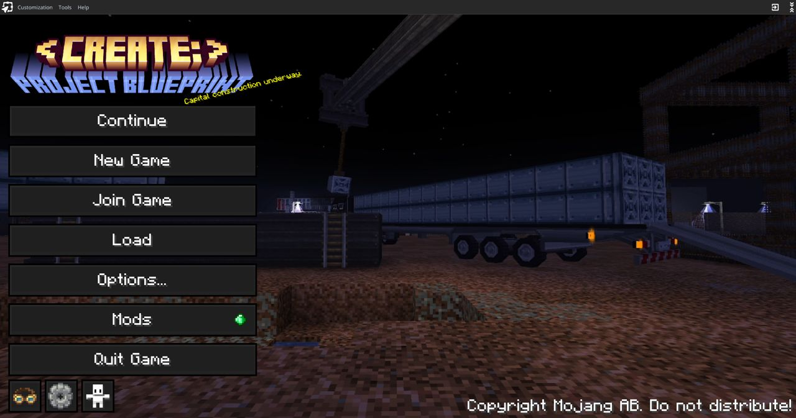
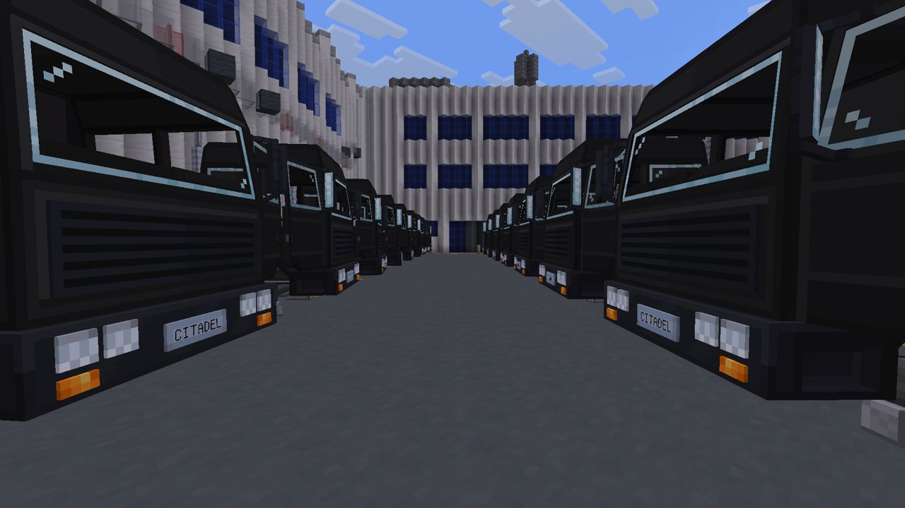
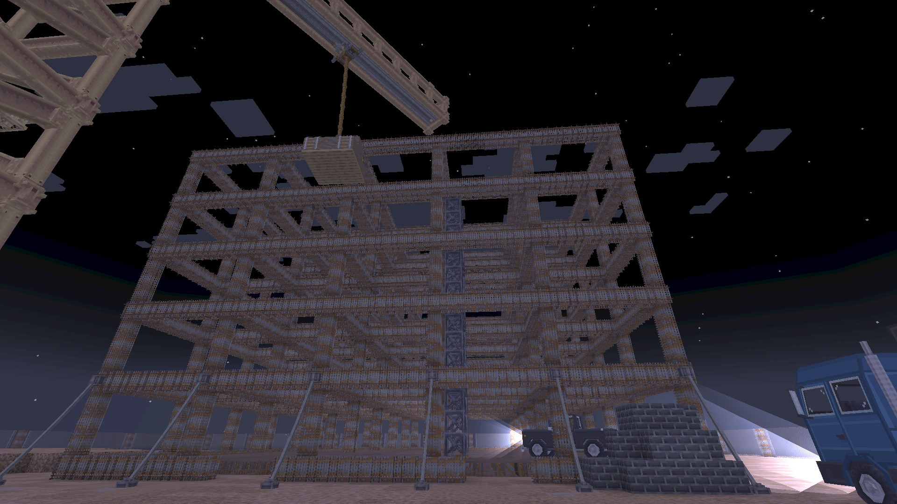
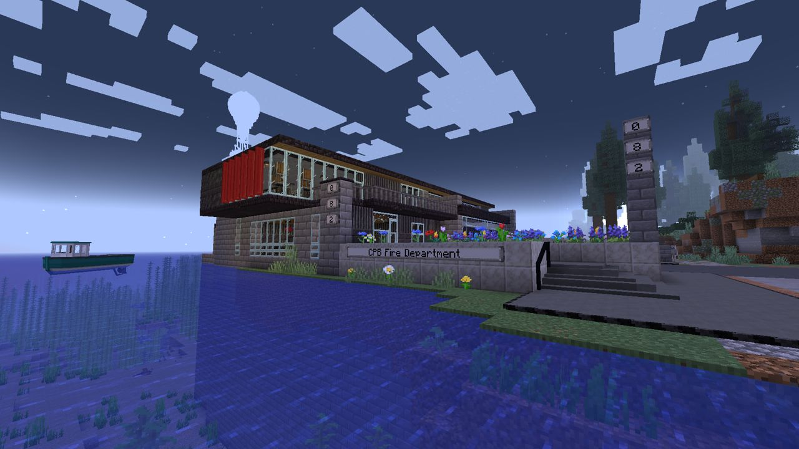
The DEFCON 4 declaration and nuclear incident
Eyewitness reports and the F.B.O.C. report describe CTBE declaring DEFCON 4 around October 2025 after a group involving supercatcreative, KALASH4741 and axolotls525 accelerated plans to attack Camp 42. The eyewitness account attributes building and detonating the nuclear devices at Camp 42 to KALASH4741, while saying supercatcreative set fires at other locations but did not use the nukes. It also identifies axolotls525 as a double agent who helped FBIS make arrests. The screenshots below document damage; the accounts and report provide the attributions and allegations.
The account describes a billboard reading “authoritarianism is not freedom,” later removed, and says the plan was to destroy as much as possible. Its narrative also records earlier disputes and suspicions in messages dated October 2–3.
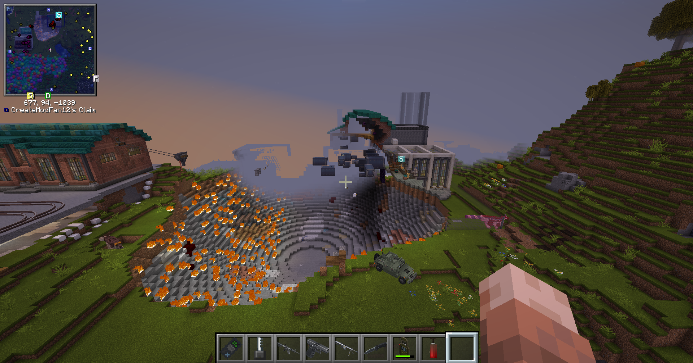
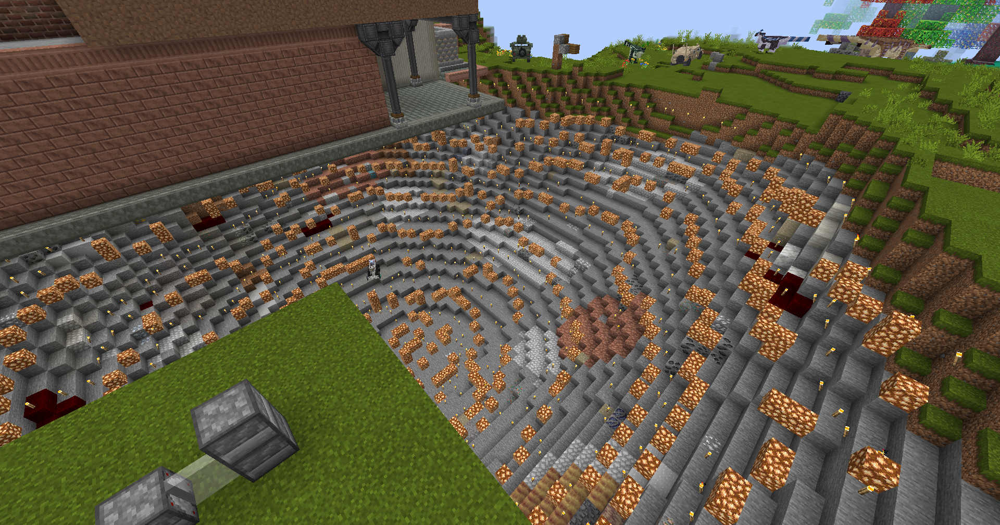
Arson and the FB.O.C. report
The account connects the fires to the same October crisis. A message dated October 30 says the server was found on fire; the existing Season 2 record also dates a house fire to October 30. The four screenshots below show the burning house and fire damage.
It includes F.B.O.C. Legal Report 002-25, filed October 31, 2025 by CreateModFan12, naming KALASHNAKOV 4741 as the defendant. The report describes alleged theft from government officials, items passed to an informant and hidden underground, and destruction with C4. Its listed charges were arson (two counts), national terrorism, theft from a government official (two counts), distribution of contraband, and hiding illegal items underground, with additional minor violations under review. These are charges recorded in a report, not a statement here that a court reached a verdict.
The pasted account separately says a later review found cheat-mod use for creative flight and travel over one million blocks from spawn. That allegation is not part of the listed charges above.
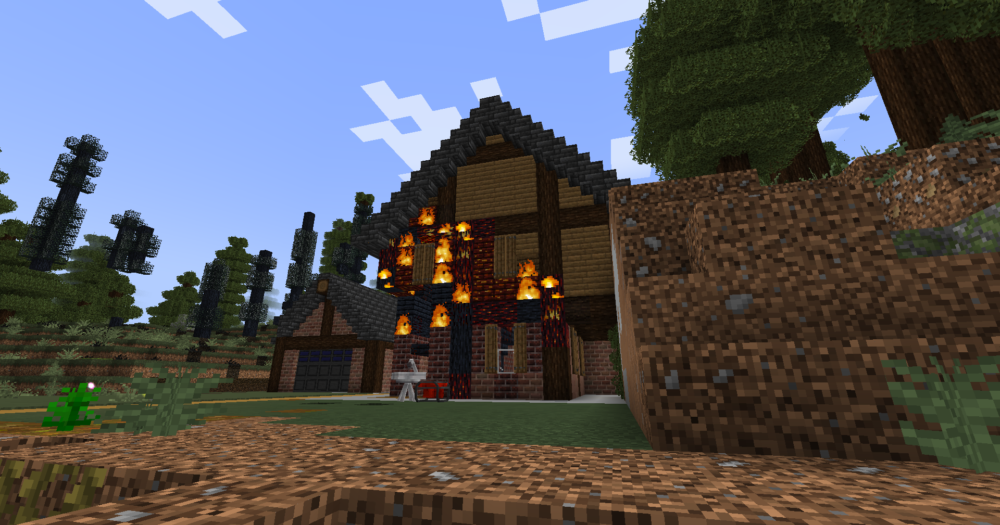
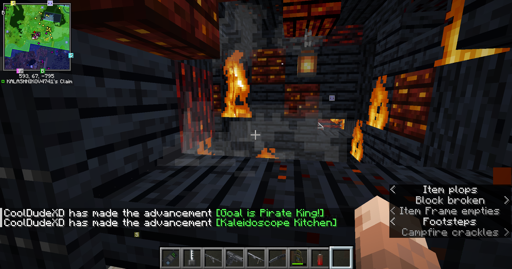
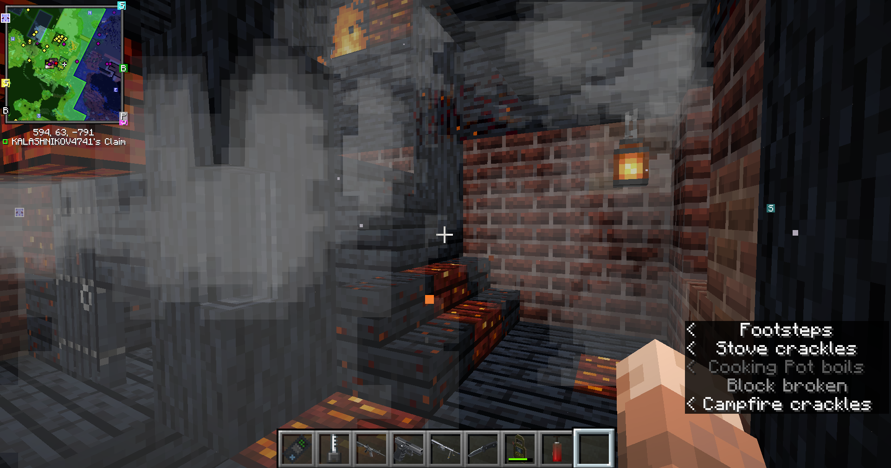
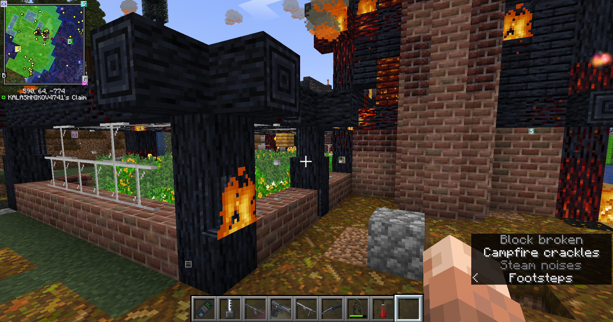
10. The whole timeline
Before July 2025
Original group & Season 1
Five friends form the base of the SMP. Cayd pushes to let more people in.
July 1 – December 7, 2025
Season 2
World save grows to 8.33 GB, trimmed to 1.04 GB. Polls become a habit.
Around October 2025
DEFCON 4, Camp 42 and the arson report
The supplied account describes a nuclear attack on Camp 42, fires elsewhere and an FB.O.C. report filed October 31. Responsibility and outcome are presented as reported claims.
Late 2025 into 2026
Season 3: Astral Divergence
Forge 1.20.1, Create 6.0.8 and Ad Astra, around 400 mods.
June 20, 2026
Season 3.1: Operation Genesis
Countdown, modpack release, first player joins. Turnout disappoints.
July 6, 2026
The rebrand
The modpack breaks during an update; CTBE becomes Create: Project Blueprint.
July – August 2026
Hardware failures
PSU fails and takes S3.1 offline; the motherboard follows and is replaced.
September 2026
New technical direction
Members pick 1.21.1 NeoForge. The constitution goes to a ratification vote. The release window slips.
October 2026
CPB in development
Seed, server setup and the notice-board block are the remaining work before Season 1.
11. What CTBE's history tells us
01
It grew out of wanting company
The group could have stayed small. Cayd's push to invite more people made it a real SMP, which is why participation has always mattered.
02
Participation was always the hard part
Polls, events and pings were constant. The goal was an active community, not just a Discord full of members.
03
One person carried the backbone
The broken pack, the dead hardware, the constitution and the maintenance all landed on the founder, who chose to keep funding it personally.
04
CPB continues CTBE
The name, pack and governance changed, but legacy members were honored and the SMP carried on.
The story isn't "CTBE died and CPB replaced it." It's a project whose old technical foundation stopped working, and which carried its community and lessons into a new version.
Gaps worth keeping honest: the exact origins of Season 1, the full events of Season 2, and the final result of the constitution ratification vote aren't documented here yet.